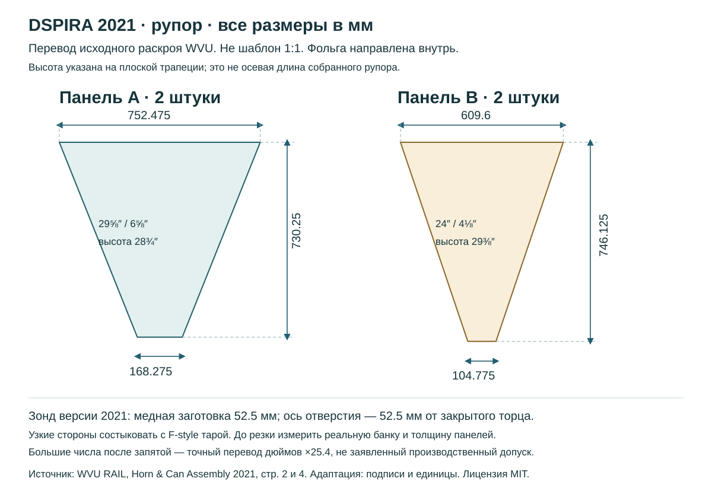
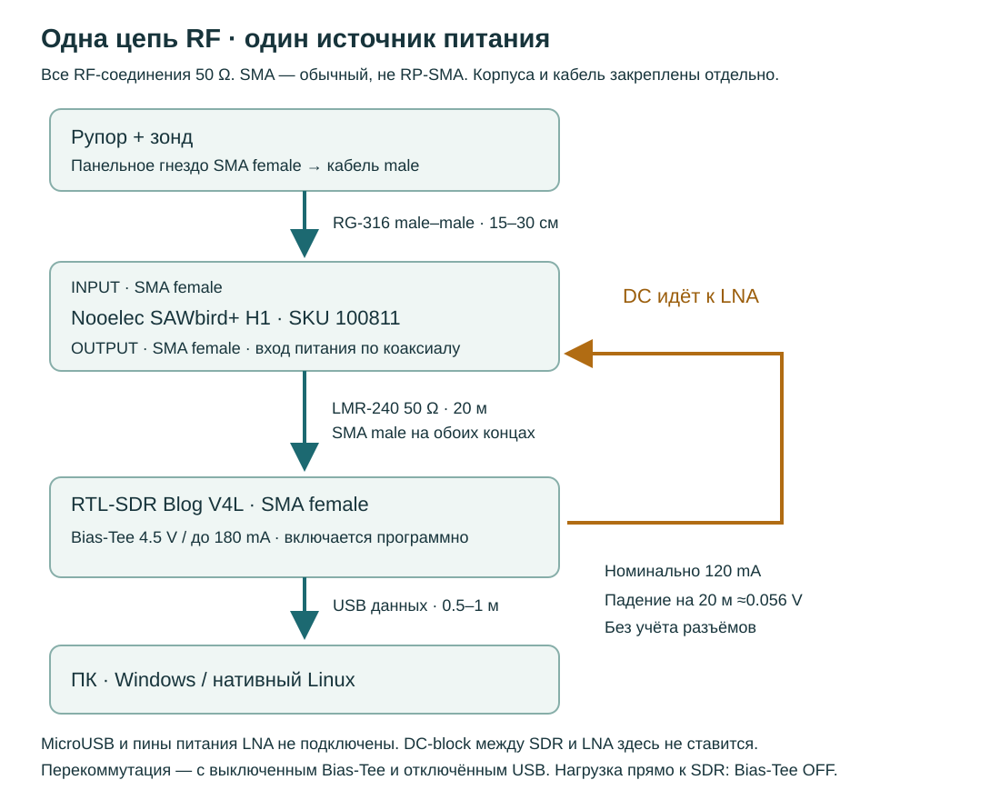

Первый радиотелескоп: от закупки до своего спектра
Конкретная сборка для наблюдения галактического H I около 1420.40575 MHz. Рупор DSPIRA 2021, приёмник RTL-SDR Blog V4L и SAWbird+ H1.
Что именно собираем
- План под бюджет 40–50 тыс. ₽; ПК, мультиметр и паяльник уже есть.
- Место — Малгобек. Начало на временной наземной установке; крыша или стена — следующий отдельный монтажный проект.
- До ПК 15–20 м: основной вариант — 20 м LMR-240 после усилителя; SDR и короткий USB находятся у ПК.
- Windows — основной аппаратный стенд; Kubuntu/Ubuntu — второй. WSL сначала используется для кода и обработки файлов. USB в WSL проверяется отдельно.
Это инструкция к конкретной учебной конфигурации с проверенными источниками. Её совместимость оценена по документам и расчётам; реальный тракт и приём неба здесь не испытаны. Результат — спектр широкого участка неба, а не фотография галактики и не обещание обнаружить пульсары.
Первый вечер: RB01 и подготовка среды RB02. До получения приёмника можно проверить анализатор на искусственном файле и изучить чертежи. Покупка радиотракта не требуется для начала C++-части.
Закупка по этапам
Суммы в рублях — плановые диапазоны закупки, НЕ подтверждённые предложения магазинов. Иностранные цены не включают доставку и сборы. Официальный магазин RTL-SDR сейчас не отправляет напрямую в РФ: до оплаты требуется доступный продавец, подтверждение подлинности, итоговой цены и точной версии. Не заказывай автоматически весь список.
Цена — за всю строку с указанным количеством. Введи 0 для уже имеющегося; пустое поле означает «не оценено». Отметка «есть» сама по себе цену не обнуляет. Инструменты, ПК и стационарный монтаж на здании не включены.
| Есть | Позиция и совместимость | План | Твоя сумма |
|---|---|---|---|
| RTL-SDR Blog V4L (Lite), dongle only1 шт. · 1 · Стенд R828S + RTL2832U, 1 ppm TCXO, SMA female, программный Bias-Tee 4.5 V / 180 mA. Ориентир производителя: US$37.95 на дату сверки; рублёвый диапазон — плановый лимит, не найденная цена доставки. Замена / ограничениеПодлинный Blog V4 из остатков допустим с его драйвером. V4 снят с производства; неизвестный «RTL-SDR Pro» не является эквивалентом. | 4 500–7 000 ₽ | ||
| Согласованная нагрузка SMA male 50 Ω, DC–3 GHz или шире1 шт. · 1 · Стенд Готовая RF-нагрузка с паспортом, ≥0.5 W и указанным VSWR около 1.42 GHz; это не одиночный резистор на длинных проводах. Напрямую к SDR подключать только с Bias-Tee OFF. Замена / ограничениеПриборная нагрузка в лаборатории, если известны её разъём и рабочая полоса. | 600–1 500 ₽ | ||
| Экранированный USB 2.0 кабель/удлинитель данных, около 0.5–1 м1 шт. · 1 · Стенд Под фактический USB-разъём купленной версии приёмника; не зарядный кабель. Нужен отвод тяжёлого коаксиала от порта компьютера. Замена / ограничениеИмеющийся исправный короткий кабель, проверенный на потери отсчётов. | 300–700 ₽ | ||
| Nooelec SAWbird+ H1, SKU 100811, в корпусе1 шт. · 2 · Антенна Именно H1 для 1420 MHz: фильтр 65 MHz, усиление ≥40 dB, номинально 120 mA, SMA female INPUT/OUTPUT. Производитель: US$49.95; подтверждать итог у продавца. Замена / ограничениеH1 Barebones — другая плата с опорной нагрузкой и переключателем; требует отдельной конфигурации. GOES/NOAA/iO/IR не подходят этой полосе. | 6 500–10 000 ₽ | ||
| Короткий 50 Ω SMA male–male кабель RG-3162 шт. по 15–30 см · 2 · Антенна Один между зондом и INPUT LNA, второй для короткого стендового соединения OUTPUT–SDR. Настоящий SMA, не RP-SMA; оба центральных контакта — штыри. Первый кабель максимально короткий. Замена / ограничениеОдин качественный переходник male–male вместо первого кабеля только с отдельным креплением LNA: вес не должен держаться на разъёме. | 800–1 500 ₽ | ||
| Новая пустая металлическая F-style тара 1 US gallon1 шт. · 2 · Антенна Типоразмер DSPIRA с прямоугольным горлом примерно 168 × 105 мм. До покупки сверить размеры корпуса и узкого конца рупора с PDF 2021. Банка должна быть новой, без следов растворителя. Замена / ограничениеЕсли доступна только круглая банка или другой размер, сначала выбрать иной полный опубликованный RF-проект; геометрию этого руководства произвольно не масштабировать. | 500–1 500 ₽ | ||
| Панельное гнездо SMA female 50 Ω под пайку + медный зонд1 комплект · 2 · Антенна Четырёхточечный фланец, вывод для пайки внутрь банки; медь AWG 4–6 (диаметр около 4.1–5.2 мм), заготовка 52.5 мм по PDF. В этой комплектации выбран female; в перечне исходного PDF пол разъёма назван иначе — сверять контакты, а не подпись продавца. Замена / ограничениеФланец с хорошим проводящим контактом со стенкой. Установка другого типа зонда или иной геометрии — отдельная RF-проверка. | 400–1 000 ₽ | ||
| Жёсткая фольгированная теплоизоляционная плита≈3 м² · 2 · Антенна Оригинальный раскрой рассчитан на лист 1219.2 × 2438.4 мм. Допустимы несколько листов, из которых целиком вырезаются 4 панели. Нужна проводящая алюминиевая поверхность, не декоративная металлизированная плёнка. Замена / ограничениеЖёсткие панели с настоящей алюминиевой облицовкой по той же геометрии; изменение толщины учесть в стыках, не уменьшать внутреннее горло. | 1 500–3 000 ₽ | ||
| Алюминиевая лента, полосы алюминия, припой и крепёж1 набор · 2 · Антенна Фольга для сплошного внутреннего экрана и швов; две усиливающие полосы 50.8 × 152.4 мм; крепёж под выбранный SMA. Проводимость швов проверить, клеевой слой сам по себе может быть изолятором. Замена / ограничение3M HVAC / металлическая ремонтная лента подходящего типа; обычный скотч — только наружная механическая фиксация. | 1 000–2 000 ₽ | ||
| Деревянная люлька и наземная опора DSPIRA 20211 комплект · 2 · Антенна Рейка фактического сечения ≈38 × 38 мм: ≥2.5 м; доска ≈38 × 89 мм: ≥6.5 м с запасом на пропил. Фанера, болты, шайбы и барашковые гайки — по оригинальным PDF. Замена / ограничениеИмеющаяся устойчивая наземная опора с двумя фиксаторами угла и разгрузкой кабеля. Не штатив неизвестной грузоподъёмности. | 2 000–4 000 ₽ | ||
| Times Microwave LMR-240 50 Ω, готовая сборка SMA male–male20 м · 3 · Расстояние Готовый кабель с проверенными окончаниями, например семейство SMA EZ-240-SM-X. Кабель идёт ПОСЛЕ LNA. Не покупать LMR-240-75: это 75 Ω. Рублёвая сумма — бюджетный ориентир; запросить цену сборки целиком. Замена / ограничениеСначала использовать короткий стенд. Замена: другой 50 Ω кабель с подтверждёнными потерями ≤≈6.5 dB на 20 м при 1.5 GHz и известным DC-сопротивлением; пересчитать питание. | 6 000–10 000 ₽ | ||
| Разгрузка разъёмов и размещение LNA для сухого сеанса1 набор · 3 · Расстояние Фиксаторы кабеля, крепление корпуса LNA к люльке, сухая площадка под наблюдением. Корпус усилителя не заявлен всепогодным. Замена / ограничениеСтационарный уличный короб, гермоввод и грозозащита относятся к отдельному монтажному проекту. | 500–1 200 ₽ |
Если реальные предложения превышают 50 тыс. ₽, сначала собери короткий стенд и отложи длинный кабель. Для экономии используй имеющиеся ПК и инструменты; не заменяй H1 фильтром другого диапазона.
Чертежи, схема и файлы
Три оригинальных PDF из WVU RAIL закреплены на версии репозитория b6b04cf5. Исходная геометрия — 2021. Размеры и фото сверяй с PDF, а не с масштабом картинки на экране. Перевод размеров и схема тракта подготовлены для этого комплекта; это адаптация электроники и подключения, не отчёт об испытании WVU с V4L и 20 м кабелем.




Права на исходные чертежи: © 2020 WVU Radio Astronomy Instrumentation Lab, MIT. Лицензия приложена. Памятка и схема не заменяют измерение собранной установки.
Почему усилитель стоит у антенны
Потери до первого усилителя сразу ухудшают чувствительность. В выбранной схеме длинный коаксиал стоит после SAWbird+ H1; по нему же идёт питание от SDR. Расчёт для оригинального LMR-240 50 Ω при 1420.40575 MHz, 120 mA и 4.5 V.
Формула паспорта: A[dB/100 ft] = 0.242080√f[MHz] + 0.000330f[MHz]. DC-петля: (10.5+12.8) Ω/км. Калькулятор не моделирует разъёмы, температуру, рассогласование, перегрузку и пусковой ток. Длина >20 м не считается выбранной конфигурацией без повторной проверки.
Зафиксировать комплект и купить первый стенд
Перед работой
Первая измерительная цель — сравнить спектры в направлении галактической плоскости и контрольных участков, сохранив исходный IQ. Выбираем один опубликованный рупор; тарелка, спутниковый телевизионный LNB и моторизованная поворотка в эту версию не входят. Самостоятельный рупор уже является антенной.
Изделие с похожим корпусом может иметь другой тюнер, полосу фильтра или питание. Ведомость ниже задаёт точную версию электроники и разъёмы. До получения и проверки приёмника достаточно купить позиции этапа «Стенд». Длинный кабель покупается после работы короткой цепочки.
Сделай по шагам
- Введи фактические предложения продавцов в таблицу бюджета. Для каждой электроники сохрани название, фото маркировки и ссылку; цену доставки внеси в резерв.
- Проверь доступность новой F-style тары под исходную геометрию. Сверь 168 × 105 мм с размерами узких концов панелей; не сверли случайную банку по чужим размерам.
- Сначала закажи SDR, нагрузку и короткий USB. В комплекте SDR антенна-диполь для этой сборки не нужна.
- Подготовь папку radio-observations и журнал: версия устройств, драйвер, дата, настройки и фото каждого соединения.
Проверка результата
Отметки этого руководства отдельные. Они не принимают задания основной карты автоматически.
Проверить SDR без антенны и усилителя
Перед работой
50 Ω нагрузка даёт воспроизводимый вход вместо неизвестных радиосигналов. Этот запуск проверяет USB, драйвер, запись и собственные помехи приёмника. Небесного сигнала здесь быть не должно. Питание по коаксиалу выключено: на нагрузку его подавать не нужно.
В Linux собираем известную ветку драйвера в собственной папке. Не удаляем системные библиотеки широкими rm-командами. В Windows нужны два слоя: WinUSB для USB-устройства и поддерживающая V4L библиотека rtlsdr.dll в программе. Разрядность DLL должна соответствовать программе.
Сделай по шагам
- Windows: из официального Quick Start установи WinUSB через Zadig только для Bulk-In Interface (Interface 0) своего SDR. Не выбирай клавиатуру или другое USB-устройство. Распакуй официальный Release.zip; возьми x64 для 64-битных утилит.
- Kubuntu/Ubuntu: выполни блок сборки ниже. Правило udev даёт доступ к USB; после его установки переподключи SDR. DETACH_KERNEL_DRIVER позволяет библиотеке отделить DVB-драйвер на время работы. Если приёмник не обнаружен — сначала проверь журнал доступа.
- Без подключения RF включи SDR, выключи Bias-Tee командой rtl_biast -b 0 и убедись, что индикатор питания RF погас. Только затем подключи нагрузку SMA male к SDR female.
- Выполни rtl_test -s 2400000 на 60 секунд, останови Ctrl+C. Требуется устойчивый поток без повторяющихся lost samples; ошибка начала/окончания отдельно записывается. При потерях замени USB-кабель или порт; для диагноза попробуй 1024000 отсчётов/с.
- Дай приёмнику прогреться 15 минут, затем запиши 60 секунд load.cu8. Запиши фактически выбранное усиление из вывода программы и размер файла.
Ubuntu/Kubuntu: отдельная сборка, из новой рабочей папки
sudo apt update
sudo apt install git cmake build-essential pkg-config libusb-1.0-0-dev
mkdir -p ~/src
cd ~/src
git clone https://github.com/rtlsdrblog/rtl-sdr-blog.git
cd rtl-sdr-blog
git checkout aed0ea19f3a273370a13c9009b96313c75d54c7b
cmake -S . -B build -DINSTALL_UDEV_RULES=OFF -DDETACH_KERNEL_DRIVER=ON
cmake --build build -j2
sudo install -m 644 rtl-sdr.rules /etc/udev/rules.d/60-rtl-sdr-blog.rules
sudo udevadm control --reload-rules
# Теперь переподключи SDR.
./build/src/rtl_biast -b 0
./build/src/rtl_test -s 2400000Если каталог уже существует, используй его осознанно: не клонируй поверх и не переключай ветку с несохранёнными изменениями. Команды относятся к нативному Linux, не к автоматическому пробросу USB в WSL.
Запись нагрузки: Linux из каталога исходников
./build/src/rtl_sdr -f 1420000000 -s 2400000 -g 8.7 -n 144000000 load.cu8-g 8.7 — фиксированное начальное усиление тюнера, не гарантия оптимума. -g 0 у этой утилиты включает auto gain. В зафиксированной rtl_sdr нет опции -T.
Windows PowerShell, в каталоге официальных x64-утилит
.\rtl_biast.exe -b 0
.\rtl_test.exe -s 2400000
# Останови тест Ctrl+C, затем:
.\rtl_sdr.exe -f 1420000000 -s 2400000 -g 8.7 -n 144000000 load.cu8Закрой SDR++, SDR# и другие программы перед запуском: одновременно устройством владеет одна программа.
Проверка результата
Отметки этого руководства отдельные. Они не принимают задания основной карты автоматически.
Вырезать и собрать рупор DSPIRA 2021
Перед работой
Здесь используется именно Horn & Can Assembly 2021. В приложенном PDF есть исходный раскрой, фотографии и последовательность. Наша размерная памятка переводит дюймы в миллиметры; она не является шаблоном печати 1:1. Высота трапеции измеряется на плоской панели, а не вдоль оси собранного рупора.
Четыре панели образуют расширяющийся металлический канал. Проводящая сторона смотрит внутрь. Большие панели: две трапеции с основаниями 752.475 / 168.275 мм и высотой 730.25 мм. Малые: две трапеции 609.6 / 104.775 мм и высотой 746.125 мм. Это точный перевод исходных размеров, не заявление о требуемой точности до микрона.
Сделай по шагам
- Открой PDF и SVG из раздела файлов. Разметь четыре отдельные панели: два экземпляра A и два B. Подпиши внутреннюю фольгированную сторону и узкий конец каждой.
- Измерь реальную тару до резки. Узкие стороны должны стыковаться с её открытым концом; изменение горла — изменение RF-конструкции, а не только удобство крепежа.
- Вырежи панели на устойчивом столе по металлической линейке. Убери крошку и острые выступы. Перед окончательным склеиванием сделай сухую примерку A–B–A–B.
- Соедини соседние внутренние кромки алюминиевой лентой, раскрой панели в объём, замкни последний шов. Все стыки внутри перекрой фольгой без щелей. Наружная лента поддерживает форму.
- Проверь рулеткой восемь размеров, симметрию и непрерывность металлических швов. Запиши реальные отклонения. Не обозначай удачную геометрию как уже измеренное RF-согласование.
Проверка результата
Отметки этого руководства отдельные. Они не принимают задания основной карты автоматически.
Сделать зонд, соединить волновод и закрепить антенну
Перед работой
Металлическая прямоугольная тара — волновод с закрытым задним торцом. Медный зонд связан с центральным проводником SMA; стенки тары — с корпусом разъёма. Эти цепи не должны быть замкнуты друг на друга. Открытый конец тары соединяется с горлом рупора.
В выбранной версии PDF заготовка зонда 52.5 мм и ось отверстия находится в 52.5 мм от закрытого торца. В других версиях встречается 65 мм: в этой сборке его не используем. Положение зонда и его длина — разные величины, даже если здесь числа совпадают. Оригинальный PDF показывает изготовление на фотографиях.
Сделай по шагам
- Работай только с новой пустой тарой. Открой дно со стороны будущего рупора, противоположный торец сохрани закрытым. Удали заусенцы; не паяй и не сверли использованную ёмкость от горючего.
- Если в сохранённом закрытом торце есть сливная горловина, полностью закрой её алюминиевой лентой изнутри и снаружи, как в инструкции WVU. Сделай плоское проводящее закрытие без открытых щелей; пластиковая крышка сама по себе не заменяет металлический торец.
- По фотографии PDF выбери широкую стенку. Проведи её среднюю линию; отметь ось зонда на расстоянии 52.5 мм от закрытого торца. Сверло под фактический ввод: исходный центральный проход 1/4″ = 6.35 мм; крепёжные отверстия — по фланцу.
- Припаяй медную заготовку длиной 52.5 мм к выводу SMA. Не перегревай диэлектрик. Установи фланец с проводящим контактом со стенкой; зафиксируй фактическую длину выступа от внутренней стенки до конца зонда.
- Мультиметром без электроники проверь: корпус SMA соединён со стенкой; центральный контакт соединён только с зондом; центр–стенка не закорочены. При коротком замыкании не подключай усилитель.
- Пристыкуй тару к узкому концу рупора. Две полосы алюминия 50.8 × 152.4 мм сформируй по внешнему стыку как в PDF; закрепи, а внутренний периметр перекрой фольгой.
- Собери люльку и основание по отдельным PDF. Все дюймовые длины переводи ×25.4; американские 2×2 и 2×4 — номиналы, фактическое сечение примерно 38×38 и 38×89 мм. Под другой пиломатериал перепроверь размеры люльки и отверстия, не меняя геометрию антенны.
- Закрепи LNA за корпус к люльке и разгрузи оба коаксиала. Проверь пять повторных установок угла, отсутствие люфта и движения основания. Два независимых фиксатора удерживают выбранное положение.
Проверка результата
Отметки этого руководства отдельные. Они не принимают задания основной карты автоматически.
Запустить короткую цепочку с SAWbird+ H1
Перед работой
SAWbird+ H1 объединяет усилители и фильтр. Его INPUT идёт к антенне, OUTPUT — к SDR. Питание подаётся в обратном относительно RF направлении: из SDR через коаксиал в OUTPUT усилителя. Здесь выбран только Bias-Tee; microUSB и пины питания LNA остаются свободными.
Расчёт совместимости: V4L выдаёт 4.5 V и до 180 mA; H1 потребляет номинально 120 mA, а его вход питания через SMA рассчитан на 3–5 V. Номинальный запас 60 mA не является измерением пускового тока и нагрева. Сначала проверяем короткую цепочку, потом добавляем длинный кабель. Отдельный DC-block в этой цепи отключил бы питание LNA.
Сделай по шагам
- Закрой программы приёма, выполни Bias-Tee OFF, отключи USB. По схеме соедини: нагрузка → INPUT H1; OUTPUT H1 → короткий SMA male–male → SDR. Проверь надписи на корпусе; не ориентируйся только на «лево/право».
- Не подключая microUSB к усилителю, включи SDR по USB. Запусти rtl_biast -b 1, проверь индикатор RF-питания. Запиши спектр нагрузки через LNA с теми же Fs и gain, что в RB02.
- Проверь устойчивость записи и нагрев после 15 минут. Не требуется конкретный уровень шума на графике: одинаковая форма и средний уровень проверяются повторными записями. Пропадание потока, отключение Bias-Tee или сильный дрейф требуют остановки и проверки соединений.
- Перед заменой нагрузки на антенну выключи Bias-Tee и отключи USB. Соедини зонд → короткий кабель → INPUT H1. Верни питание, затем включи Bias-Tee и запиши короткий файл с небом.
- Не увеличивай gain сразу до максимума. Начни с 8.7 dB тюнера, затем сравни с меньшим доступным фиксированным значением, сохраняя отдельные файлы. Клиппинг и сильные узкие линии — повод искать перегрузку/помеху, а не добавлять второй усилитель.
Управление Bias-Tee между сеансами
# Linux, из каталога исходников; SDR должен быть свободен
./build/src/rtl_biast -b 1
# Затем отдельным запуском rtl_sdr запиши файл.
# По окончании закрой приём и отключи питание LNA:
./build/src/rtl_biast -b 0Windows: те же команды с .\rtl_biast.exe. Не используй запись EEPROM для постоянного включения питания: следующий запуск может оказаться с прямой нагрузкой.
Проверка результата
Отметки этого руководства отдельные. Они не принимают задания основной карты автоматически.
Перенести ПК на 15–20 метров от антенны
Перед работой
В основной конфигурации LNA остаётся возле зонда, длинный кабель стоит между OUTPUT LNA и SDR. По данным LMR-240 при 1.5 GHz типичные потери 32.4 dB/100 м; 20 м дают 6.48 dB, до учёта разъёмов. Для 1420.4 MHz паспортная формула даёт около 6.29 dB. Это расчёт для оригинального кабеля, не замер купленной сборки.
Усиление LNA ≥40 dB помогает перенести потери длинного кабеля за первый усилитель. По Фриису вклад потерь после усилителя делится на его линейное усиление. Ставить те же 20 м между антенной и LNA значительно хуже. Для питания: (10.5+12.8) Ω/км ×0.020 км = 0.466 Ω; при 0.120 A падение около 0.056 V. На LNA ожидается примерно 4.44 V без учёта контактов и отклонений источника. Это проектная оценка, а не гарантия работоспособности конкретного экземпляра.
Сделай по шагам
- После успешного RB05 закажи сборку LMR-240 50 Ω длиной 20 м с SMA male на обоих концах. Попроси подтверждение кабеля, проверки кабельных окончаний и DC-проводимости.
- Без подключённой электроники прозвони центр–центр и экран–экран: низкое сопротивление; центр–экран: обрыв. Бытовой мультиметр не измеряет RF-потери и плохо разрешает доли ома — не выдавай его результат за анализатор кабеля.
- В выключенной цепочке замени короткий OUTPUT–SDR кабель длинным. Закрепи его на опоре и перед SDR; оставь мягкие петли. Минимальный радиус повторного изгиба LMR-240 по паспорту 63.5 мм; не делай тугих заломов возле SMA.
- Повтори запись с нагрузкой на INPUT LNA при том же gain. Сравни устойчивость, уровень и форму спектра с коротким вариантом. Изменение уровня после кабеля ожидаемо; разрывы, отключение питания и неповторяемые широкие искажения — нет.
- Для первых наблюдений используй сухую площадку и убирай установку после сеанса. Постоянный ввод наружного кабеля в здание, молниезащита, ветровая нагрузка и крыша/стена в эту базовую сборку не входят. Их бюджет и проект оформляются отдельно.
Проверка результата
Отметки этого руководства отдельные. Они не принимают задания основной карты автоматически.
Получить первый спектр и проверить формат данных
Перед работой
rtl_sdr записывает interleaved unsigned 8-bit I,Q: два байта на комплексный отсчёт, без заголовка. Это cu8, не cf32_le из проектируемого ядра. Поставляемый iq_spectrum.py потоково переводит отсчёты в комплексные значения, удаляет постоянную составляющую каждого блока, применяет Hann, FFT и усредняет мощность в линейной шкале.
При Fs=2.4 MHz и N=4096 расстояние между частотами 585.9375 Hz. Эффективная шумовая полоса окна Hann около 1.5 такого шага. График показывает относительную PSD, не dBm и не кельвины. Пик ровно на центральной частоте приёмника нельзя считать водородом; рабочая настройка fc=1420.0 MHz оставляет ожидаемую линию в стороне от DC.
Сделай по шагам
- Скачай iq_spectrum.py из файлов. Установи NumPy и Matplotlib в отдельное Python-окружение; для анализа сохранённых файлов одинаково подходят Windows, WSL и Kubuntu.
- Обработай load.cu8 и sky-A.cu8 с фактическими Fs и fc. Если они были другими, измени параметры команды; у сырого файла нет встроенной настройки.
- Проверь JSON отчёта: количество обработанных отсчётов, отрезанный хвост, долю крайних кодов АЦП, единицы и настройки. Большая доля крайних кодов требует уменьшить усиление и повторить запись; отсутствие крайних кодов не исключает аналоговую перегрузку.
- Сохрани CSV, PNG и JSON вместе с raw и заполненным session-example.json. Рассматривай диапазон около 1420.40575 MHz, учитывая, что Доплер и ошибка частоты сдвигают линию.
- Если график пуст, сначала проверь размер/формат файла и настройки. Если видны одни иглы, не выбирай красивую как «линию»: переходи к контрольным измерениям RB08.
Linux / WSL: окружение для обработки
python3 -m venv .venv
.venv/bin/python -m pip install numpy matplotlib
.venv/bin/python iq_spectrum.py sky-A.cu8 --fs 2400000 --fc 1420000000 --out sky-AНа Ubuntu для venv может понадобиться пакет python3-venv. Скрипт не управляет радио и не подтверждает небесную природу пика.
Windows: обработка файла
py -3 -m venv .venv
.\.venv\Scripts\python.exe -m pip install numpy matplotlib
.\.venv\Scripts\python.exe iq_spectrum.py sky-A.cu8 --fs 2400000 --fc 1420000000 --out sky-AСоздаются sky-A.csv, sky-A.png и sky-A.json. Для записи 60 секунд требуется около 288 МБ; для пяти минут — 1.44 ГБ.
Проверка без оборудования: искусственный сигнал
python make_test_signal.py synthetic.cu8
python iq_spectrum.py synthetic.cu8 --fs 2400000 --fc 1420000000 --out synthetic-resultЗапускай Python из созданного окружения; сначала скачай оба скрипта в одну папку. Ожидается тон около 1420.350 MHz, погрешность положения пика — до половины шага FFT. Это тест формата/ПО, не модель водорода и не результат наблюдения. Уже существующие выходные файлы не перезаписываются.
Проверка результата
Отметки этого руководства отдельные. Они не принимают задания основной карты автоматически.
Провести наблюдение с проверками происхождения сигнала
Перед работой
Первый продукт — повторяемая особенность спектра с контролями, а не абсолютная температура неба. Выбери участок галактической плоскости высоко над горизонтом: как исходное учебное направление можно использовать галактические координаты l=110°, b=0°. Его высоту и азимут на свою дату и UTC нужно вычислить для фактической площадки. Пример ниже даёт координаты для приблизительного центра Малгобека, а не для конкретной крыши.
Для сигнала полезны несколько независимых проверок. При перестройке fc на 100 kHz внешняя линия остаётся на той же абсолютной RF-частоте, а привязанный к нулю SDR артефакт перемещается. Это отличает часть внутренних артефактов, но не исключает внешнюю помеху. Смена направления, согласованная нагрузка и повтор в другой день нужны дополнительно. OFF-направление может тоже содержать H I: разность ON–OFF нельзя автоматически считать абсолютным спектром линии.
Сделай по шагам
- До сеанса вычисли высоту/азимут выбранного направления, запиши UTC и маску горизонта. Выбирай момент с высотой ≥30° и свободным обзором. Азимут здесь отсчитывается от истинного севера по часовой стрелке; магнитный компас без поправки не даёт истинный азимут.
- Первые 15 минут прогрей цепь с фиксированными настройками. Запиши 60 секунд с нагрузкой на INPUT LNA, затем при выключенном питании замени её антенной.
- Наведи ось рупора на цель и зафиксируй положение. Запиши пять файлов по 60 секунд с fc=1420000000, Fs=2400000, тем же gain. Между файлами отмечай UTC и угол; для суммарного PSD усредняй мощности, не значения в dB.
- Сделай 60-секундную запись с fc=1420100000 при том же направлении. Затем верни fc и запиши контрольное направление, смещённое на 30–40° при похожей высоте и без земли/зданий в луче. Верни антенну на исходную отметку и повтори запись.
- После сеанса повтори нагрузку на INPUT LNA, выключая питание при переподключении. На следующий подходящий день повтори исходную цель; сохрани все файлы, включая неудачные.
- Проверь, совпадает ли абсолютная частота кандидата при смене LO, меняется ли профиль с направлением и исчезает ли особенность при нагрузке. Сопоставь с обзором Bonn, явно учитывая отличия разрешения и системы скоростей. Если контроль не выполнен или результат противоречив, статус — «кандидат / не установлено», а не «водород обнаружен».
Направление l=110°, b=0°: пример расчёта, дату заменить
# В то же Python-окружение: python -m pip install astropy
from astropy.coordinates import SkyCoord, EarthLocation, AltAz
from astropy.time import Time
import astropy.units as u
site = EarthLocation(lat=43.51*u.deg, lon=44.59*u.deg, height=0*u.m)
# Приблизительный центр города, высота условная. Замени своей площадкой.
utc = Time("2026-10-20T18:00:00", scale="utc")
target = SkyCoord(l=110*u.deg, b=0*u.deg, frame="galactic")
p = target.transform_to(AltAz(obstime=utc, location=site, pressure=0*u.hPa))
print("UTC:", utc.isot, "Altitude:", p.alt.deg, "Azimuth:", p.az.deg)Это пример, не назначение наблюдения и не автоматизация. Москва UTC+3: 21:00 местного времени = 18:00 UTC. Обновлённые IERS-данные могут требовать интернет; рефракция здесь выключена.
Проверка результата
Отметки этого руководства отдельные. Они не принимают задания основной карты автоматически.
Подключить результат к собственному C++/Qt ПО
Перед работой
Сначала интегрируется сохранённый файл, затем живое устройство. Это позволяет отделить ошибку FFT или формата от USB и радиотракта. Простой эталонный анализатор нужен как независимая опора; свой C++ код пишется по карте ПО радиотелескопа.
Адаптер cu8 должен переводить два последовательных байта в I и Q с документированным масштабом, например (x−127.5)/128.0. Затем ядро получает комплексные значения или cf32_le согласно собственному контракту. Не переименовывай .cu8 в .cf32: это разные представления. Состояния перегрузки, пропусков и смены gain должны попадать в файл метаданных.
Сделай по шагам
- В RS03.1 реализуй импорт cu8 рядом с существующим cf32_le; проверь на небольшом искусственном файле с известным тоном.
- В RS04–RS05 сравни C++ PSD с iq_spectrum.py при одинаковых N, Hann, нормировке, удалении среднего и числе блоков. Объясни допустимый численный допуск.
- В RS08.3 собери CLI для replay; в RS09 выведи график в Qt и метаданные сеанса. GUI не должен незаметно менять единицы или нормировку.
- В RS10 подключай SoapySDR/RTLSDR только после отдельной проверки поддержки V4L в установленном драйвере и фактического формата потока. Проверь остановку, занятое устройство и потерю USB.
- Собери пакет одного наблюдения: исходники, raw, настройки, результаты, журнал контролей и ограничения. Пришли его или небольшой воспроизводимый фрагмент для ревью.
Проверка результата
Отметки этого руководства отдельные. Они не принимают задания основной карты автоматически.
Если что-то не работает
SDR не находится
Возможные причины: Занятое устройство, драйвер, USB/udev
Закрой все программы приёма. Windows: проверь Interface 0 и DLL для V4L. Linux: переподключи USB после udev; сохрани точный текст ошибки.
Есть поток, но почти ничего не принимается
Возможные причины: Старая библиотека для V4L или не питается LNA
Сначала нагрузка и правильная версия драйвера. Затем проверь индикатор Bias-Tee и направление INPUT/OUTPUT. Не подключай второй источник питания.
Повторяются lost samples
Возможные причины: USB, диск, нагрузка ПК, кабель
Верни короткий USB и прямой порт; проверь тест без записи на диск. Снизь Fs для диагностики и обязательно запиши новое Fs в метаданные.
Пик точно в центре каждого спектра
Возможные причины: DC или внутренняя особенность SDR
Смени fc на 100 kHz. Смотри абсолютную RF-ось; оставь рабочую линию в стороне от центра.
Много игл, форма меняется при gain
Возможные причины: RFI или перегрузка
Сравни меньший фиксированный gain, питание ПК и USB-расположение по одному фактору. Не добавляй усилитель без диагноза.
С длинным кабелем всё нестабильно
Возможные причины: Разъёмы, питание или повреждение кабеля
Верни короткую цепочку. Без питания прозвони длинную, проверь отсутствие RP-SMA/75 Ω. Ожидаемое ослабление само по себе не равно неисправности.
Линии водорода не видно
Возможные причины: Направление, геометрия, помехи, недостаточная чувствительность
Проверь каждый предыдущий этап, сравни нагрузку/небо, повтори наблюдение. Сохрани отрицательный результат; длительное накопление не исправит неверную полосу или короткое замыкание.
Что остаётся за пределами первой сборки
- Абсолютная температурная калибровка, измерение диаграммы, S11 и шумовой температуры — отдельные задачи RT04/RT07. Бытовая прозвонка их не заменяет.
- Точная коррекция частоты и переход к LSR/барицентрическим скоростям изучаются в RT09.2 и RS11.1.
- Радиочастотная эффективность самодельной антенны и помеховая обстановка проверяются на месте. Чертёж не даёт гарантии обнаружения.
- Стационарное крепление на крыше/стене, ветровой расчёт, ввод в здание, молниезащита и всепогодный корпус требуют отдельного инженерного проекта и бюджета.
- Моторизация, интерферометрия, Солнце/Юпитер и пульсары не включены в комплект первой версии.
Для переноса журнала на другой компьютер используй экспорт вверху. Это отдельный JSON комплекта; прогресс 36 заданий карты и журнал пробелов экспортируются на своих страницах. Отметки хранятся в браузере, сайт не проверяет измерения и не получает ревью из чата.
Первоисточники
Проверены 2026-10-18. Актуальность модели, цены и доставки перед оплатой сверяется заново. Компоновка и расчёты в руководстве — инженерные выводы из этих источников.
- WVU DSPIRA: Horn & Can Assembly, 2021
- WVU DSPIRA: Cradle Assembly, 2021
- WVU DSPIRA: Stand Assembly, 2021
- RTL-SDR Blog: V4L, драйвер и питание
- RTL-SDR Blog: смена V4 на V4L, 11 августа 2026
- RTL-SDR Blog: текущие модели, цены и доставка
- Nooelec: SAWbird+ H1, SKU 100811
- Nooelec: питание и направление SAWbird
- Times Microwave: LMR-240, паспорт 50 Ω
- RTL-SDR Blog: исходники драйвера, зафиксированная версия
- RTL-SDR Blog: установка драйвера в Windows
- RTL-SDR Blog: Windows Release.zip
- Astropy: SkyCoord и преобразования координат
- Bonn: All-sky H I Profile Search
- NRAO: Radio Telescopes and Radiometers
- NumPy: FFT и частотная ось
- WVU DSPIRA: зонд, отверстие и закрытие горловины тары